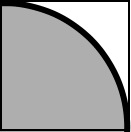
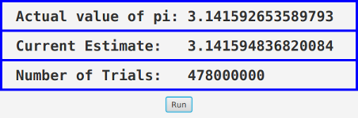

Exercises
This page contains several exercises for Chapter 12 in Introduction to Programming Using Java. Each solution includes a discussion of how a programmer might approach the problem and interesting points raised by the problem or its solution.
Exercise 12.1:
Subsection 12.1.3 discusses the need for synchronization in multithreaded programs, and it defines a ThreadSafeCounter class with the necessary synchronization. Is this really important? Can you really get errors by using an unsynchronized counter with multiple threads? Write a program to find out. Use the following unsynchronized counter class, which you can include as a nested class in your program:
static class Counter {
int count;
void inc() {
count = count+1;
}
int getCount() {
return count;
}
}Write a thread class that will repeatedly call the inc() method in an object of type Counter. The object should be a shared global variable. Create several threads, start them all, and wait for all the threads to terminate. Print the final value of the counter, and see whether it is correct.
Let the user enter the number of threads and the number of times that each thread will increment the counter. You might need a fairly large number of increments to see an error. And of course there can never be any error if you use just one thread. Your program can use join() to wait for a thread to terminate (see Subsection 12.1.2).
Exercise 12.2:
Exercise 3.2 asked you to find the integer in the range 1 to 10000 that has the largest number of divisors. Now write a program that uses multiple threads to solve the same problem, but for the range 1 to 100000. By using threads, your program will take less time to do the computation when it is run on a multiprocessor computer. At the end of the program, output the elapsed time, the integer that has the largest number of divisors, and the number of divisors that it has. The program can be modeled on the sample prime-counting program ThreadTest2.java from Subsection 12.1.3. For this exercise, you should simply divide up the problem into parts and create one thread to do each part.
Exercise 12.3:
In the previous exercise, you divided up a large task into a small number of large pieces and created a thread to execute each task. Because of the nature of the problem, this meant that some threads had much more work to do than others—it is much easier to find the number of divisors of a small number than it is of a big number. As discussed in Subsection 12.3.1, a better approach is to break up the problem into a fairly large number of smaller problems. Subsection 12.3.2 shows how to use a thread pool to execute the tasks: Each thread in the pool runs in a loop in which it repeatedly takes a task from a queue and carries out that task. Implement a thread pool strategy for solving the same maximum-number-of-divisors problem as in the previous exercise.
To make things even more interesting, you should try a new technique for combining the results from all the tasks: Use two queues in your program. Use a queue of tasks, as usual, to hold the tasks that will be executed by the thread pool (Subsection 12.3.2). But also use a queue of results produced by the threads. When a task completes, the result from that task should be placed into the result queue. The main program can read results from the second queue as they become available, and combine all the results to get the final answer. The result queue will have to be a blocking queue (Subsection 12.3.3), since the main program will have to wait for results to become available. Note that the main program knows the exact number of results that it expects to read from the queue, so it can do so in a for loop; when the for loop completes, the main program knows that all the tasks have been executed.
Exercise 12.4:
In previous exercise, you used a thread pool and a queue of tasks to find the integer in the range 1 to 100000 that has the largest number of divisors. Subsection 12.3.4 discusses a higher-level approach that uses an ExecutorService. Write one more program to solve the problem, this time using an ExecutorService and Futures. The program should still break up the computation into a fairly large number of fairly small tasks, and it should still print out the largest number of divisors and the integer that has that number of divisors.
(There is yet another way to solve the same problem: the stream API from Section 10.6. My solution of this exercise also discusses how to use streams to solve the problem.)
Exercise 12.5:
In Exercise 11.3, you wrote a network server program that can send text files from a specified directory to clients. That program used a single thread, which handled all the communication with each client. Modify the program to turn it into a multithreaded server. Use a thread pool of connection-handling threads and use an ArrayBlockingQueue to get connected sockets from the main() routine to the threads. The sample program DateServerWithThreads.java from Subsection 12.4.3 is an example of a multithreaded server that works in this way. Your server program will work with the same client program as the original server. You wrote the client program as the solution to Exercise 11.4.
Exercise 12.6:
It is possible to get an estimate of the mathematical constant π by using a random process. The idea is based on the fact that the area of a circle of radius 1 is equal to π, and the area of a quarter of that circle is π/4. Here is a picture of a quarter of a circle of radius 1, inside a 1-by-1 square:

The area of the whole square is one, while the area of the part inside the circle is π/4. If we choose a point in the square at random, the probability that it is inside the circle is π/4. If we choose N points in the square at random, and if C of them are inside the circle, we expect the fraction C/N of points that fall inside the circle to be about π/4. That is, we expect 4*C/N to be close to π. If N is large, we can expect 4*C/N to be a good estimate for π, and as N gets larger and larger, the estimate is likely to improve.
We can pick a random point in the square by choosing numbers x and y in the range 0 to 1 (using Math.random()). Since the equation of the circle is x*x+y*y=1, the point lies inside the circle if x*x+y*y is less than 1. One trial consists of picking x and y and testing whether x*x+y*y is less than 1. To get an estimate for π, you have to do many trials, count the trials, and count the number of trials in which x*x+y*y is less than 1,
For this exercise, you should write a GUI program that does this computation and displays the result. The computation should be done in a separate thread, and the results should be displayed periodically. The program can use Labels to the display the results. It should set the text on the labels after running each batch of, say, one million trials. (Setting the text after each trial doesn't make sense, since millions of trials can be done in one second, and trying to change the display millions of times per second would be silly.
Your program should have a "Run"/"Pause" button that controls the computation. When the program starts, clicking "Run" will start the computation and change the text on the button to "Pause". Clicking "Pause" will cause the computation to pause. The thread that does the computation should be started at the beginning of the program, but should immediately go into the paused state until the "Run" button is pressed. Use the wait() method in the thread to make it wait until "Run" is pressed. Use the notify() method when the "Run" button is pressed to wake up the thread. Use a boolean signal variable, running, to control whether the computation thread is paused. (The wait() and notify() methods are covered in Subsection 12.3.5.)
Here is a picture of the program after it has run many trials:

You might want to start with a version of the program with no control button. In that version, the computation thread can run continually from the time it is started. Once that is working, you can add the button and the control feature.
To get you started, here is the code from the thread in my solution that runs one batch of trials and updates the display labels:
for (int i = 0; i < BATCH_SIZE; i++) {
double x = Math.random();
double y = Math.random();
trialCount++;
if (x*x + y*y < 1)
inCircleCount++;
}
double estimateForPi = 4 * ((double)inCircleCount / trialCount);
Platform.runLater( () -> {
countLabel.setText( " Number of Trials: " + trialCount);
piEstimateLabel.setText( " Current Estimate: " + estimateForPi);
} );The variables trialCount and inCircleCount are of type long in order to allow the number of trials to be more than the two billion or so that would be possible with a variable of type int.
(I was going to ask you to use multiple computation threads, one for each available processor, but I ran into an issue when using the Math.random() method in several threads. This method requires synchronization, which causes serious performance problems when several threads are using it to generate large amounts of random numbers. A solution to this problem is to have each thread use its own object of type java.util.Random to generate its random numbers (see Subsection 5.3.1). My solution to this exercise discusses this problem further.)
Exercise 12.7:
The chat room example from Subsection 12.5.2 can be improved in several ways. First, it would be nice if the participants in the chat room could be identified by name instead of by number. Second, it would be nice if one person could send a private message to another person that would be seen just by that person rather than by everyone. Make these two changes. You can start with a copy of the package netgame.chat. You will also need the package netgame.common, which defines the netgame framework.
To make the first change, you will have to implement a subclass of Hub that can keep track of client names as well as numbers. To get the name of a client to the hub, you can override the extraHandshake() method both in the Hub subclass and in the Client subclass. The extraHandshake() method is called as part of setting up the connection between the client and the hub. It is called after the client has been assigned an ID number but before the connection is considered to be fully established. It should throw an IOException if some error occurs during the setup process. Note that any messages that are sent by the hub as part of the handshake must be read by the client and vice versa. The extraHandshake() method in the Client is defined as:
protected void extraHandshake(ObjectInputStream in, ObjectOutputStream out)
throws IOExceptionwhile in the Hub, there is an extra parameter that tells the ID number of the client whose connection is being set up:
protected void extraHandshake(in playerID, ObjectInputStream in,
ObjectOutputStream out) throws IOExceptionIn the ChatRoomWindow class, the main() routine asks the user for the name of the computer where the server is running. You can add some code there to ask the user their name. (Just imitate the code that asks for the host name.) You will have to decide what to do if two users want to use the same name.
For the second improvement, personal messages, I suggest writing a new PrivateMessage class. A PrivateMessage object would include both the string that represents the message and the ID numbers of the player to whom the message is being sent and of the player who sent the message. The hub will have to be programmed to know how to deal with such messages. A PrivateMessage should only be sent by the hub to the client who is listed as the recipient of the message. You need to decide how the user will input a private message and how the user will select the recipient of the message. Don't forget that PrivateMessage needs to be declared to implement Serializable.
If you attempt this exercise, you are likely to find it quite challenging.